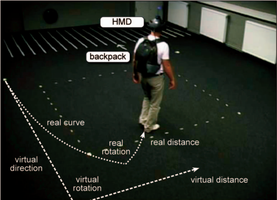

Ce site web est réalisé dans le cadre du cours d'intéractivité ART1213.
Le Redirected Walking
Depuis quelques années, la réalité virtuelle s’est vu devenir de plus en plus démocratisée dans le foyer des particuliers. Le marché évoluant de façon à être accessible et avec un côté ludique attirant pour les consommateurs. On observe l’apparition de casque de réalité virtuelle entièrement portatif.
En effet, plus besoin de fils reliés à un ordinateur s’occupant de fournir la puissance de calcul au casque, le casque est équipé d’un ordinateur intégré. Cela offre donc aux usagés la possibilité d’utiliser cette technologie à l’endroit qui leur convient, plus besoin d’une pièce dédiée. C’est le cas, entre autres, du casque Quest 2 d’Oculus. La portabilité qu’offre ce dernier nous apporte à nous demander si ce ne serait pas le candidat parfait pour mettre de l’avant le Redirected Walking ou Marche Redirigé en français.
Qu’est-ce que le Redirected Walking ?
Comment ça fonctionne?
Le Redirected Walking est une technique qui consiste à manipuler l’utilisateur à penser qu’il marche en ligne droite alors qu’en fait, il tourne en rond. L’utilisateur est redirigé à l’aide de manipulation minime, afin qu’il ne s’en rende pas compte, de la caméra. Cela pousse l’utilisateur à devoir se repositionner et/ou se réorienter sans qu’il ne s’en aperçoive.
On sait, grâce à la psychologie perceptive, que la vision domine souvent la proprioception Notre perception de la position du corps dans l'espace, de ses mouvements et de ce que chacun de ses membres fait en rapport avec les autres. et la sensation vestibulaire La sensation des mouvements et de l’équilibre lorsqu'elles sont en désaccord. Dans les expériences de perception, où les participants ne peuvent utiliser que la vision pour juger de leur mouvement dans une scène virtuelle, ils peuvent estimer avec succès la direction momentanée de leur mouvement, mais sont moins habiles dans la perception de leur trajectoire. Par conséquent, puisque les utilisateurs ont tendance à compenser involontairement de petites incohérences pendant la marche, il est possible de les guider sur des chemins dans le monde réel, qui diffèrent du chemin perçu dans le monde virtuel. Cette marche redirigée permet aux utilisateurs d'explorer un monde virtuel qui est considérablement plus grand que l'espace réel qui les entoure.
 Scénario de marche redirigé. Crédit : STEINICKE ET AL.: ESTIMATION OF DETECTION THRESHOLDS FOR REDIRECTED WALKING TECHNIQUES (2010)
Puisque les techniques de marche redirigée sont basées sur les imperfections de la perception visuelle humaine, il faut étudier la perception humaine de l'automouvement pour identifier les seuils de déviation tolérables entre les mouvements virtuels et réels. Lorsque les signaux sensoriels (visuels, vestibulaires et proprioceptifs) qui soutiennent normalement la perception de l'automouvement sont en conflit, tel que lorsque des stimuli visuels de mouvement sont présentés à des sujets immobiles, la vision peut dominer les informations vestibulaires et proprioceptives.
Par exemple, dans l'illusion de vection linéaire, les observateurs ont l'impression de se déplacer alors qu'ils sont physiquement immobiles, simplement parce qu'on leur présente un mouvement visuel à grand champ qui ressemble au modèle de mouvement normalement expérimenté lors d'un mouvement réel (par exemple, lorsque nous sommes assis dans le métro et que le train d’à côté démarre alors que nous demeurons immobiles). Ce modèle de mouvement visuel est appelé flux optique, et de nombreuses recherches ont montré que les humains peuvent, en principe, extraire des informations d'automouvement du flux optique.
En conclusion
Il est de notre avis qu’avec l’arrivée de nouvelles technologies se démocratisant, incluant le suivi interne des casques de réalité virtuelle, le redirected walking devient de plus en plus alléchant pour les usagers. En effet, avec seulement le besoin de se définir un espace dans lequel on peut bouger librement, il devient possible de marcher et de se déplacer dans un environnement virtuel, et ce, sans grande contrainte. L’immersion peut donc être augmentée, car il est possible pour l’usager de faire fit de son environnement, la machine s’occupe de le garder en sécurité et de le rediriger. L’utilisateur se lancer alors librement dans la virtualisation.
Suggestion de visionnement sur la réalité augmenté
Sources
Redirected Walking Razzaque, Sharif. The University of North Carolina at Chapel Hill. ProQuest Dissertations Publishing, 2005. 3190299.
Estimation of Detection Thresholds for Redirected Walking Techniques Steinicke, F., Bruder, G., Jerald, J., Frenz, H., & Lappe, M. (2010). IEEE Transactions on Visualization and Computer Graphics, 16(1), 17–27. doi:10.1109/tvcg.2009.62